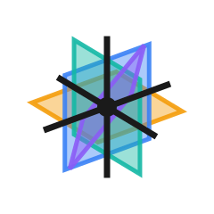

First name your sky with to your words here: on its own lines. Then tap a color — it writes the numbers for you, in a custom-sky of line right where your cursor is.
Your garden can't secretly do anything.
Most apps on your phone can't say that. Yours can.
Your garden is a tiny file plus your seed. Give a friend the file, and the exact same garden grows on their computer.
Your teacher can call out these seeds at the front of the room — everyone's garden, one by one.
Take your drive home. Open your garden on any computer and try:
two-flowers of 380, spot — another pair, way over on the rightsky of "just before dark" — a different time of dayWhat you did here is real programming. The same ideas — naming things, saying why, building from small pieces — work in every language there is.
grew a garden in Planes, wrote the reasons it looks the way it does, and can tell you where every part came from.